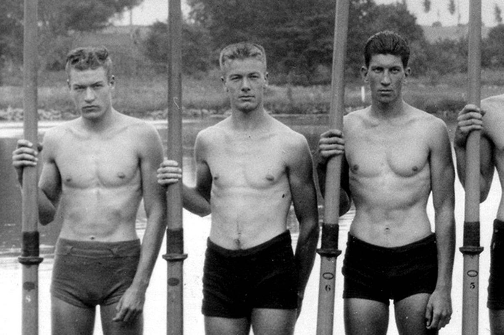

2 centuries ago...
Our founding fathers united the Thirteen Colonies to
fight the War of Independence.
Out of control money printing to fund the Revolutionary
War at both the state and federal levels led to incredible
hyperinflation during the period of the first Continental
Congress.
Economic imbalance is still problematic today because it
worsens inequality, restricts social mobility, and undermines
social cohesion. So lets dive in deeper with the help of...
Alex Tran! (Self-proclaimed alpha wolf)
How is economic imbalance a problem in the Boys in the Boat?
Economic imbalance subtly underpins the backdrop of 'The Boys in the Boat,' set during the Great Depression. Characters like Joe Rantz come from working-class backgrounds, facing economic hardship and limited opportunities. Yet, amidst this disparity, rowing offers a chance for individuals like Joe to excel, showcasing the transformative power of sports. While not the central theme, economic struggles shape the narrative, emphasizing resilience and determination in the face of adversity.
A quote that shows an example of economic imbalanace is "The depression took everyone by the throat and squeezed until there was nothing left of their former lives. It was especially hard on the Rantz family" (Brown 32). Here, the narrative explicitly acknowledges the harsh impact of economic turmoil on families like the Rantz's, illustrating the broader societal struggles of the era.

Currently in America, lower middle class citizens have had “stagnating earnings and fewer economic resources than [they] had in the early 1990s.” This adversely affects home ownership, retirement, health, and life expectancy. However, the upper middle class fared significantly better, a divide that has widened since the 1990s.
Not only could the less wealthy fall behind affluent peers due to access to technology, they are also less inclined to play sports at all. Budget cuts also affect the number of people playing sports in school, which could be a larger issue in less wealthy communities.
In 1900s Germany, a sports guide claimed that a perfect rowing team can only be formed by people with the same educational and cultural background.
How is economic imbalance a problem in the current world?
What can we do to reduce the inequity of the economy?
Currently in America, lower middle class citizens have had “stagnating earnings and fewer economic resources than [they] had in the early 1990s.” This adversely affects home ownership, retirement, health, and life expectancy. However, the upper middle class fared significantly better, a divide that has widened since the 1990s.
Not only could the less wealthy fall behind affluent peers due to access to technology, they are also less inclined to play sports at all. Budget cuts also affect the number of people playing sports in school, which could be a larger issue in less wealthy communities.
In 1900s Germany, a sports guide claimed that a perfect rowing team can only be formed by people with the same educational and cultural background.